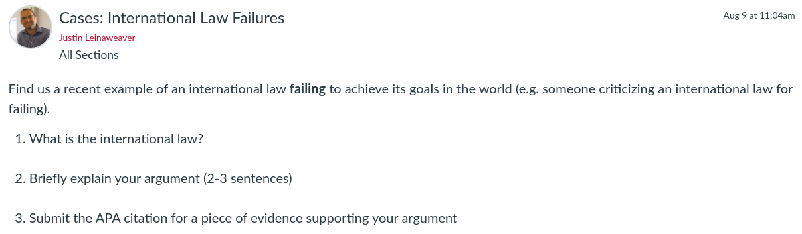

Today’s Agenda
Section 1: Analyzing International Institutions
Do international institutions matter?
Using “Legalization” to analyze international institutions (Abbott, Keohane, Moravcsik, Slaughter & Snidal 2000)
Justin Leinaweaver (Fall 2026)
The Statute of the International Court of Justice (ICJ)
Article 38
The Court, whose function is to decide in accordance with international law such disputes as are submitted to it, shall apply:
international conventions
international custom
the general principles of law
subject to the provisions of Article 59, [.e. that only the parties bound by the decision in any particular case,] judicial decisions and the teachings of the most highly qualified publicists of the various nations, as subsidiary means for the determination of rules of law.
Over the last two classes we worked on answering the question: What is international law?
We did this by rooting ourselves in Art 38 of the Statute of the International Court of Justice (ICJ)
Let’s talk big takeaways from those classes
Overall, how would you explain what international law is to someone else?
How different is this, really, from domestic law?
Different in at least one HUGE way: enforcement by the state vs enforcement by the participants
HOWEVER, many similarities: Treaties as written rules, custom and principle like judicial precedent and English common law
For the purposes of solving international problems, when should we focus on using treaties and when on custom?
Did our work last class change how you feel about Cassese’s “fundamental principles”? Why or why not?
Remember, according to Cassese these are “fundamental” because they are universal in scope and legally binding.
If all of them are rooted in well established custom then hasn’t he made his argument successfully?
Our next job is to explore tools we can use to help us understand, analyze and compare international institutions.
In our first class of the semester we took a look at two VERY different types of international law.
The Slavery Convention which is clearly a treaty, and
A resolution from the UN General Assembly which is a recommendation made by the members of an international organization
These two examples differ in many, many ways, but not all of those differences matter as much to us.
What we need are tools that help us cut through the differences in order to identify the variation that is most important, and
Some way to measure those differences so we can analyze and compare them on more equal terms
Abbott, Keohane, Moravcsik, Slaughter & Snidal (2000)
That brings us to a VERY important article in the IR literature
I cannot emphasize enough how big these names are in the study of international relations over the last 25 years.
Legalization represents one way to approach analyzing and comparing international institutions regardless of their source.
Legalization gives us three dimensions across which international institutions can vary
Each dimension is a matter degree meaning it runs from “softer” forms of law to “harder” forms
Each dimension can vary independently meaning harder levels of obligation do not automatically move levels of precision or delegation
A BIG part of the negotiation to create new international institutions is often directly an effort to move each of these pieces in order to find a final design that is acceptable
e.g. State X wants harder obligations so State Y demands less precision to compensate
Two VERY important notes on this tool:
Low levels of legalization across all three dimensions is NOT an argument that the institutions don’t exist or that they don’t matter
Soft law, even if primarily composed of vague recommendations to guide future negotiations, can still be very powerful in terms of moving behavior!
Example: The UNFCCC got the world to agree on a goal of averting dangerous climate change. Wasn’t a binding rule BUT it completely structured the design of each new climate change treaty!
NONE of this is about making an effectiveness argument
Does the law “work” is a very important question that legalization can help you explore BUT not answer
Any questions on the broad strokes of the tool?
Operationalizing Legalization
Ok, talk me through the “Obligation” dimension
What would it mean to evaluate a treaty in terms of its “obligations”?
“Obligation means that states or other actors are bound by a rule or commitment or by a set of rules or commitments” (401).
“Bound” means that your behavior regarding this obligation “is subject to scrutiny under the general rules, procedures, and discourse of international law, and often of domestic law as well” (401).
In essence, obligation asks how significant or constraining of your behavior are the rules in the treaty
Are they merely suggestions or absolute commandments?
Think: States shall or states must vs states are encouraged to…
Any questions on the six levels of obligation suggested by Table 2?
Per the reading, what are “conditions on obligation in row 2?
(Treaties often specify that no one is bound by any rules until enough other states have also joined the treaty)
An effort to avoid a first mover disadvantage
What are “contingent obligations”?
(A way to soften hard obligations using contingent conditions: You must cut your climate emissions BUT based on national capabilities)
And what are “escape clauses”?
(Another way to soften hard obligations allowing states to ignore a rule or leave a treaty under certain circumstances: You may infringe on civil liberties during national emergencies)
Reading Notes
Obligation (Table 2 p410)
‘pacta sunt servanda’ (“agreements must be kept”) means essentially that “rules and commitments” in international agreements ARE obligatory meaning performed in good faith (409)
‘rebus sic stantibus’: “things standing thus” stipulates that, where there has been a fundamental change of circumstances, a party may withdraw from or terminate the treaty in question.
Note how frequently seemingly hard obligations are softened by phrasing through things like contingent obligation (cut your climate emissions based on national capabilities) or offering an escape clause (infringe on civil liberties during national emergencies or simply allow states to walk away from a treaty as desired)
More complicated are situations where seemingly strict obligations are created by institutions that lack the power to do so (UN GA resolutions). Interestingly, even though these are actually often nonbinding they can shape state behavior in significant ways thus demonstrating a greater power than ever assumed.
Levels :
High, Medium or Low ]]
Let’s now use this dimension of legalization to classify the Slavery Convention we examined last week.
Start by working in small groups (2-3)
Go through the treaty and identify the “obligations” for states it includes
Don’t assume that all of them will be the same level of obligation
ON BOARD
Let’s make a list of obligations and classify each one as either “High”, “Medium” or “Low”
FA23
Operationalizing Legalization
Ok, talk me through the “Precision” dimension
What would it mean to evaluate a treaty in terms of its “precision”?
“A precise rule specifies clearly and unambiguously what is expected of a state or other actor (in terms of both the intended objective and the means of achieving it) in a particular set of circumstances. In other words, precision narrows the scope for reasonable interpretation” (412).
“For a set of rules, precision implies not just that each rule in the set is unambiguous, but that the rules are related to one another in a noncontradictory way, creating a framework within which case-by-case interpretation can be coherently carried out” (413).
Any questions on the five levels of precision suggested by Table 3?
Other Reading Notes
Precision (Table 3 p415)
Precise rules are often highly elaborated or dense (although not always)
“The more”rule-like” a normative prescription, the more a community decides ex ante which categories of behavior are unacceptable; such decisions are typically made by legislative bodies. The more “standard-like” a prescription, the more a community makes this determination ex post, in relation to specific sets of facts; such decisions are usually entrusted to courts” (413).
Given the absence of “judicial, quasi-judicial, and administrative authorities” in most areas of IR, imprecise rules are often left to interpretation by the states themselves.
“Much of international law is in fact quite precise, and precision and elaboration appear to be increasing dramatically” (414).
Levels :
High, Medium or Low ]]
Let’s now use this dimension of legalization to classify the Slavery Convention we examined last week.
ON BOARD
Groups, how do you classify the precision of this treaty?
FA23
Operationalizing Legalization
Ok, talk me through the “Delegation” dimension
What would it mean to evaluate a treaty in terms of its “delegation”?
Can be split into two parts: Dispute resolution and rule-making/implementation
the extent to which states and other actors delegate authority to designated third parties including courts, arbitrators, and administrative organizations to implement agreements.
In addition, “As Table 4b indicates, a range of institutions from simple consultative arrangements to full-fledged international bureaucracies helps to elaborate imprecise legal norms, implement agreed rules, and facilitate enforcement” (417).
Any questions on the levels of delegation suggested by Table 4?
Reading Notes
Delegation (Table 4 p)
“The third dimension of legalization is the extent to which states and other actors delegate authority to designated third parties including courts, arbitrators, and administrative organizations to implement agreements. The characteristic forms of legal delegation are third-party dispute settlement mechanisms authorized to interpret rules and apply them to particular facts (and therefore in effect to make new rules, at least interstitially) under established doctrines of international law” (415).
See Table for the VERY wide range of ways this can be implemented
Some institutions even allow for individuals and private groups to “initiate a legal proceeding”
In addition, “As Table 4b indicates, a range of institutions from simple consultative arrangements to full-fledged international bureaucracies helps to elaborate imprecise legal norms, implement agreed rules, and facilitate enforcement” (417).
“Many operational activities serve to implement legal norms. Virtually all international organizations gather and disseminate information relevant to implementation; many also generate new information” (417).
“Legalized delegation, especially in its harder forms, introduces new actors and new forms of politics into interstate relation” (418).
“Deciding disputes, adapting or developing new rules, implementing agreed norms, and responding to rule violations all engender their own type of politics, which helps to restructure traditional interstate politics” (418).
Levels :
High, Medium or Low ]]
Let’s now use this dimension of legalization to classify the Slavery Convention we examined last week.
ON BOARD
Let’s make a list of delegation elements and classify each one as either “High”, “Medium” or “Low”
FA23
Where does this put the Slavery Convention on Table 1?
Remember, Table 1 rank ordering is more a suggestion not a “strict ordering”
SLIDE : Let’s jump to a different treaty so we can think more deeply about delegation.
Everybody open up the International Convention for the Regulation of Whaling (1946)
This is the convention that created the International Whaling Commission (IWC)
Has anybody ever heard of the IWC?
This is the organization that established the whaling moratorium in 1986
An astoundingly effective policy that saved many whale populations BUT ALSO pissed off whaling countries around the world!
It’s actually led some whaling countries to leave the organization so they could continue whaling
Japan left in 2019
Norway formally objected and has set its own catch limits
Iceland left in 1992 and returned in 2002
Levels :
High, Medium or Low ]]
Let’s split the class in half
Side A focus on dispute resolution, Side B on rule making and implementation
ON BOARD
Dispute Resolution
Rule making and Implementation
Operationalizing Legalization
Any questions on the dimensions of legalization?
SLIDE : Before we wrap up, I want to briefly highlight how some of these authors have also worked to conceptualize the differences between hard and soft law as a trade-off.
Hard and Soft Law in International Governance
(Abbott and Snidal 2000)
It is VERY hard
Make your commitments more credible,
Reduce transaction costs, and
Allows for incomplete contracting.
Ken Abbott and Duncan Snidal wrote a companion piece in this issue of IO focused on the trade-offs in designing international law.
Hard Law is very hard to make BUT:
Makes your commitments more credible
e.g. High precision means no self-serving interpretations of the rules,
e.g. High obligation means violations are a big deal for your reputation,
Violations can also be punished in more ways, appealed to international arbitration
Reduces transaction costs (high delegation means disputes handled internally in the law, not by requiring a new law
High delegation means no need to waste time/resources on complete contracting
So, obviously, hard law is the closest analogue we have to domestic law.
They are hard to make but come the closest to establishing clear, binding rules on the international level.
That does NOT mean soft law is bad.
Hard and Soft Law in International Governance
(Abbott and Snidal 2000)
Soft Law is the ultimate tool of compromise!
Typically achieves less than hard law, BUT
Low contracting costs means deals WAY
Bottom line, hard law is more substantial than soft law BUT better to get any soft law on the books as a first step than fail to create a hard one and make no progress at all.
SLIDE : If time remains do another treaty, if not go to assignment for next time
Operationalizing Legalization
Treaty on the Prohibition of Nuclear Weapons (2017)
Groups, let’s practice!
Analyze the Treaty on the Prohibition of Nuclear Weapons using legalization!
ON BOARD
Next Class
Read the Mearsheimer (1994) excerpts, then…
